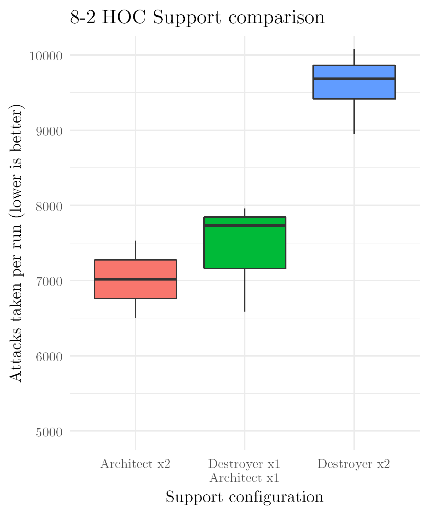

What is SF dragging?#
Coalition units can gain experience through combat or by feeding them Rapid Growth Disks - the SF equivalent of Combat Reports. As SF echelons cannot be partially supplied, corpse dragging does not work like it does in Griffin echelons. SF units don't get XP multipliers with each link, further reducing the value of combat.
Rapid Growth Disks are thus the main method for leveling SF, and can be obtained by running the Defense Training coalition drill. This is a timegated resource, so some players may want another path for decent leveling.
SF dragging is a leveling method that uses a friend's SF echelon to provide infinite HOC support. An unsupplied SF echelon (Griffin echelons can work, but just do 13-4) can then run through a series of fights, gaining experience with almost no resource cost. Certain maps with infinitely-spawning helipads make it simple to do this until the 99 turn limit.
One curious optimization this allows for is skipping Defense Training entirely, and running petri/keycode sims on those days instead. Note that all of this is entirely unnecessary for 100% of players, and is only really worth considering if you like seeing lots of "lv. 100"s next to characters in your armory. Defense Training provides plenty of disks, and SF are only rarely useful to deploy.
Shattered Connexion/Alina#
Fractured Cognition I EX in Chapter 3 has a neat new SF dragging method (setup vid by Aqua, planning adaptation by me, video with planning) that lets you grind 3 teams at the same time. This time, the spawns are id335808 and 335809. While the Dinergates have 92 FP, Alina should take care of those before they attack. After that, the ELIDs are the next highest with 29 FP.
{kind=link}
Following are the armor requirements to reduce even the highest damage rolls from these to 1:
| # of Weaken chips | Armor req (base) | Armor req (Defend) |
|---|---|---|
| 0 | 33 | 22 |
| 1 | 29 | 20 |
| 2 | 25 | 17 |
Overall durability requirements are much lower - it's possible to get an occasional dinergate bite, but it looks unlikely to take more than 500 damage on an armored and at least somewhat evasive SF tank. Less than 200 if the Dinergates are nice. If you let one heavy helipad stay red and are leaving a dummy out to get the correct number of AP, you can also repair any of your echelons without disrupting the cycle mid-run. The ELIDs only attack the leftmost echelon, so you can get by with less vs the 13 FP SWAP Prowlers. There's hardly a point to doing this given how low the requirements are, but for completeness:
| # of Weaken chips | Armor req (base) | Armor req (Defend) |
|---|---|---|
| 0 | 14 | 10 |
| 1 | 13 | 9 |
| 2 | 11 | 8 |
You'll encounter a few prespawns in setting up, but they're nothing scary either. Do not try other SF HOCs. It will end very badly, very quickly.
8-2 Armor Requirements#
Don't drag 8-2, as the SC map is far better (less damage, less setup, more echelons, faster). The following information is shown for historical reference only.
There are two possible spawns you'll need to tank when dragging 8-2 (example setup by Triscuiticus): id1252 (Rippers and Prowlers) and id1253 (Vespids). The Vespids are rather damaging with 39 FP, so you'll need armor on your tank. Luckily, as you're on an allied node and have lots of SF around, Defend and Weaken can make this much easier.
Following are the armor requirements to reduce even the highest damage rolls from these Vespids to 1:
| # of Weaken chips | Armor req (base) | Armor req (Defend) |
|---|---|---|
| 0 | 44 | 30 |
| 1 | 39 | 26 |
| 2 | 34 | 23 |
| 3 | 30 | 20 |
You may be able to get by with slightly less armor, but these are the ideal thresholds for minimizing repairs. With strong support and a good tank, it's possible to go all 99 turns without repairing. Even aside from the armor bonus, bringing a ringleader with Defend is strongly recommended for the increase in survivability its evasion buff brings. It can, depending on exact stats, approximately double your tank's lifespan.
You'll also need something in the top row that can handle a few Prowlers. They only have 10 FP, so pretty much anything armored is fine there. If you don't mind a marginally higher repair bill, it's even possible to use something like a decently-leveled Scout.
Manticores are the longest-lasting tank, but their high cost limits what else you can bring. The stats on an Aegis are only slightly lower, so they may be preferable. Depending on your level of desperation, Nemeums/Tarantulas may work with some extra repair trips.
(The pre-spawned Strikers can also be fairly damaging due to their high ROF. I recommend killing those with your clearing team whenever convenient.)
8-2 HOC Options#
When Destroyer was released, she was the only HOC support available. Not much you can do but use two of her. We get a few more options with Architect's release: you can go with double Destroyers, one Destroyer and one Architect support, or double Architects. Here's a few tests comparing them, going by the estimated total number of attacks taken.

Turns out that Destroyer's not very good at this - you definitely want at least one Architect, and two of her may even be better than a mix.
All tests were done with 2x Weaken, 3x Fighting Spirit, 1x Defend, 99 turns. No repairs needed. I like this metric a bit better than measuring damage taken, as it's comparable across different tanks and different evasion levels. The length of each 8-2 run means the sample sizes are pretty small, but hopefully it's convincing enough anyways. Measuring something like time is extremely bothersome to keep fair, and the in-game damage chart is a bit unreliable.
Dreamer is absolutely terrible as support. Her data isn't included in the plot above as I don't plan on going through the suffering needed to make her boxes properly representative. (This also provides a bit more evidence of Destroyer's ineptitude - Architect+Dreamer, while awful, was noticeably better than Destroyer+Dreamer.)
{kind=link}